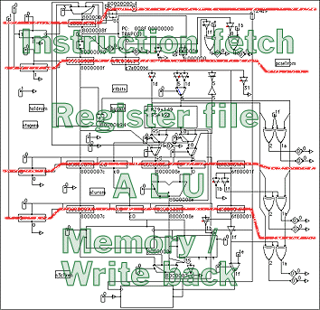
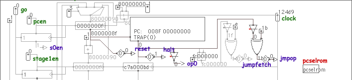
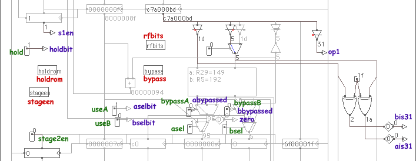
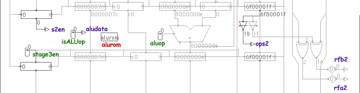
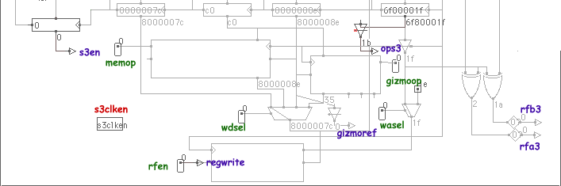

This lab is hard, and you will have to think in order to complete it! We really mean it! Start early and work hard.
Introduction: What's up with the ugly picture?
In this lab we're going to write the control logic for the pipelined BETA. We'll produce a BETA that is dramatically faster than our original implementation, but we'll pay for that speed with extra logic and complexity.
If you're feeling really macho, go ahead and load up the lab in Betasim, and knock yourself out programming the ROMs. Once you've looked at the datapath and come to your senses, come back here for the full explanation of what's going on.
On the right is a shrunk-down version of the entire datapath. The red lines mark the stages of the pipeline. You'll notice that each red line goes through a bunch of registers. Those registers mark the boundaries of the stage. If you look closely, you might be able to spot some familiar items from Lab 2. Unfortunately, pipelining the BETA requires the addition of a whole lot of extra circuitry.
Below, we'll go over each of the stages in detail, one at a time.
The other thing you might notice about the datapath is that there are a lot of control ROMs lying around. Why did we break up the control into a bunch of ROMs, instead of just having one big rom?
There are almost 40 bits of input information that we need in the control ROM to handle all of the logic. If we were to make a real ROM table out of this, the table would need 240 lines of information. That's about 1 trillion lines.
Fortunately for us, there is a ton of redundancy in that table. We can take just a few input bits to produce an intermediate value in one ROM. Another ROM can take that intermediate value and a few more input bits to compute some more values, and so on. In the BETA datapath at right, there are seven ROMs, none of which take more than 12 bits of input (4096 lines). Ah, abstraction!
Each of the pictures below starts with one set of registers, shows the logic of one stage, and ends with another set of registers. The names of the control ROMs have been highlighted in red, the switches are indicated in green, and the input bits to the control ROMs are shown in purple.
This stage reads the instruction from the instruction memory, and does as much interpretation of the instruction as it can -- we want as much information as we can get as soon as possible.

|
At the very top is the pcsel mux. This mux selects the source of the new PC: PC+1+constant for a branch, a register for a jump, some trap address for a trap, or PC+1. You folks were all over this problem in Lab2, so we've already coded up the pcselrom shown here to pick the correct pcsel for you. Aren't we nice?
There are a bunch of things we can tell from the instruction word without looking at anything else. These are listed in the table on the right.
The register and switches on the far left are something new. The pcen switch enables the pc register, and also is the data input to the first register. Thus the output of the register, s0en, records whether we latched something in the instruction fetch stage. In other words, when s0en is true, there is an instruction being processed in this stage. This technique appears in every stage. Making this work is your first assignment in part 1 of this lab.

|
There is a bit more going on in this stage than you're probably used to. The asel and bsel muxes, which should be familiar, are each preceeded by a bypass mux. You will use these muxes in part 4 of the lab. Don't worry about them until then.
There also appears to be an extra adder in the middle of this stage. It's adding the constant to the PC+1, and feeding the result back to the pcsel mux in Stage 0. This line gets used during a BRZ or BRNZ instruction. As part of the lab checkout, you'll have to answer the following questions about this adder:
This stage should be old hat by now

|
This stage is pretty boring. In fact, the alurom is something you did back in Lab 2, so we've written it for you. (All right!)
The two XOR gates on the far right are used in detecting hazards (which you'll worry about in Part 2 of the lab). rfa2 is true when the destination register being computed in this stage matches the Ra being looked up in the Register File stage. rfb2 tests for the similar case on Rb.
This stage performs memory reads (LD / LDR) and also performs memory and register file writes. Also included in this stage is the special I/O gizmo box we hid from you on Lab 2. The gizmo box acts just like a memory, but it is selected instead of the memory when the address is a small negative number (when bit 30 of the address is set -- see an explanation of why we chose bit 30, if you're interested).

|
It may look at first glance like this stage doesn't have a set of registers at its end. Think again! The registers are actually the write ports of the memory and the register file. In fact, we've called the ROM for this stage s3clken which seems really cryptic, until you realize that its main purpose is to enable the write clock on the appropriate destination box in this stage.
Once again, you've done all of this stuff in Lab 2, so we've filled in s3clken
for you. (Phew!)
Betasim on the WebEnter your name and password in the appropriate spaces, then click the "Log in" button. (If you don't have an account, you can use the name "guest" with password "guest", but you won't be able to save any changes.) If this is your first time logging in, you'll want to set up your own password, instead of the one we gave you. Use the administration page to change your password. (Internet Explorer only for now...) |
Part 1 is just for practice: you only need to edit one ROM, and the resulting pipeline isn't all that smart, but it will help you understand a bit better what's going on.
To make the pipelined BETA work (really stupidly), we'll force the pipeline to stall until each instruction has made it individually through the entire pipeline. You should be gasping in disgust right now, but trust us on this, you don't want to go straight to Part 2.
Log into Betasim with lab 5 selected (it should be the default if you use this page to log in). Before you do anything else, choose "Save as" from the file menu and rename the path file "Lab5p1.path".
| |||||||||||||||
To make this thing work, you'll need to edit the stageen ROM. Double-click on the stageen ROM to open the ROM edit window. You'll need to write expressions for the following switches:
- pcen
- Enables the PC register, and starts a new instruction flowing through the pipe.
- stage1en
- Enables the Stage 1 (Register file) registers
- stage2en
- Enables the Stage 2 (ALU) registers
- stage3en
- Enables the Stage 3 (Mem/WB) registers
- go
- Enables the registers that keep track of which instruction is in which stage. Leave this as 1 for now. You'll use this in Part 2.
The expression for pcen should be pretty straightforward. You don't want to enable the PC until the current instruction has made it to the Mem/WB stage. You should use the s0en, s1en and s2en inputs to enforce this.
When should the Stage 1 registers be enabled (stage1en)? They should be enabled when there is some data ready to be latched, of course. Look at the schematic and figure it out... it's pretty easy. stage2en and stage3en are frightfully similar.
If you've followed the directions exactly, you might notice that your processor now executes programs correctly, but doesn't seem to want to halt. Fix your pcen definition to account for halting.
TIP: Sometimes, it's easier to work in negative logic. Instead of writing an expression for pcen, it might be easier to write an expression for something like pcdisable, and then write pcen= (pcdisable==0) (There is no unary ! operator in Betasim.) Go ahead and do it. The Betasim ROM parser regards any name that doesn't match a switch name as a local variable.
When you're done, SAVE YOUR WORK!
The default code runs the fractal code from Lab 1 at a depth of 4. You can double-click the gizmo box (next to the memory in the Mem/WB stage) to open the terminal window and watch the BETA draw the fractal. In the control panel (under the "Clock" menu), hit the reset button twice. Click the grey words "Click here to enter an expression", type "clock", and hit return. The value is the number of clock ticks that have elapsed since you hit the reset button. Hit "Go" and "go fast". When the program halts, write down the number of clock ticks elapsed (you may have to click the value to change it from hexidecimal to decimal). This is your benchmark number.
This is the tricky part. Think carefully, and be patient while you are debugging.
Before you start this section, load your work from Part 1, choose "Save As..." from the "File" menu, and save the path as "Lab5p2.path".
In Part 1, you created a working pipelined BETA, but a pretty stupid one. It was as if you were doing your laundry, and waited until you took your first batch of clothes out of the dryer before you put your second batch into the washing machine.
We'd like to be able to start the execution of a second instruction while the first one is still in the pipeline. We can do this, but there are some dangerous situations we have to be careful about.
| |||||||||||||||||||||
The first problem is pipeline hazards. If Instruction B attempts to use the result of a previous Instruction A before Instruction A has written its result into the register file, then Instruction B will execute with the wrong value for its argument. We need to be able to hold an instruction at the Register File stage while instructions later in the pipe continue to execute.
The first step is to figure out when we need to hold the pipe. Double click the holdrom ROM, and write a new expression for hold. You should only need to use s2en, s3en, rfa2, rfb2, rfa3 and rfb3. Think carefully about what each of these mean.
Now we need to rewrite stageen. pcen at this point should be ridiculously easy. Don't worry. It'll get more complicated in a few paragraphs.
| ||||||||||||||||||||||||
What does it really mean to hold the pipe? "We need to be able to hold an instruction at the Register File stage while instructions later in the pipe continue to execute." What does this involve?
Obviously, we can't update the PC. We've taken care of that with pcen. But if there's an instruction in the RF stage (Stage 1), we can't let it go on to Stage 2 until the hold is released. Therefore, we can't enable the registers for Stage 2. But we can't let go of the instruction waiting in Stage 1, so we can't enable the Stage 1 registers either. Think about this carefully, and then rewrite the expressions for stage1en and stage2en.
If you run the simulator now, you'll get a nasty hold-related bug that's really tough to track down. The reason is the following: we've just disabled the registers for Stage 1 by setting stage1en to 0. But we still need to remember that there's an instruction waiting in Stage 1 (indicated by s1en). But if we let the register that holds s1en clock, we'll lose that knowledge. Look carefully at what go does, and write the expression for go.
Okay, here's where pcen gets complicated. There is one more kind of hazard that can give you problems: Jumps and Branches. If we have fetched a JMP instruction (indicated by jmpop), or a BRZ or BRNZ instruction (indicated by jumpfetch), then we can't know where the next instruction is coming from until the JMP, BRZ, or BRNZ instruction makes it into the Register File stage (Stage 1). Think very hard (this is tricky), and rewrite pcen to account for branches and jumps.
SAVE YOUR WORK!
If everything checks out, run the fractal code again, and record the number of clock ticks. Nice, no?
If you were watching the pipeline carefully in Part 2, you may have noticed that it was being stupid about some pipeline conflicts. In particular, register 31 is always zero, so there can't be a hazard that depends on r31.
| |||||||||||||||||||||||||||
| |||||||||||||||||||||||||||
Double click the rfbits ROM. You'll be rewriting the expressions for useA and useB. useA should be true only when the value coming out of the A side of the register file is being used in the computation. Obviously, the A side is only in use when ais31==0 (Ra is not 31). The A side is in use when asel is 1 (selecting Ra instead of PC+1)... but it is also in use in other cases. Figure out what they are and rewrite useA. Similarly, the B side is in use when bsel is 0 (Rb instead of the constant), but there are other cases... Rewrite useB.
Note that the useA and useB switches go directly into the aselbit and bselbit bits. The holdrom can use these bits to be more careful about when to hold the pipeline. Rewrite hold in the holdrom.
SAVE YOUR WORK!
Once again, run the fractal code and record the number of clock ticks.
Before you start this section, load your work from Part 3, choose "Save As..." from the "File" menu, and save the path as "Lab5p4.path".
| |||||||||||||||||||||||||||
| |||||||||||||||||||||||||||
Now we'll implement our super-performance feature, bypassing. While this isn't all that complicated, it's generally costly in terms of area (think of all the wires), so bypassing didn't arrive untill second generation RISCs.
By this point, you're all experts at this stuff, so we aren't going to give you any help on writing bypassA and bypassB in the bypass ROM. Just think hard, and be careful.
Once you've written bypassA and bypassB, you can take advantage of the bypassing to make your useA and useB bits even smarter. Rewrite useA and useB in the rfbits ROM to include the new information from abypassed and bbypassed.
SAVE YOUR WORK!
Run the fractal code yet again. If you turn off the "go fast" option, you can actually see how often the bypassing wires are in use (they turn red when the bypassing is used). Record the number of clock ticks, and prepare to be amazed.
So how good is this pipelining idea? Let's examine some real numbers. We have four stages: IF, RF, ALU and MEM/WB.
We have the following times for each pipeline stage:
Assuming the added delay of the pipeline registers and extra control logic is negligible, how fast could we clock the pipielined BETA? How fast could we clock it without pipelining, assuming we used the same hardware for each stage? What's the latency of an operation for the pipelined and unpipelined BETAs?
Grab that scrap of paper on which you jotted the clock times for the fractal program running on your BETA for parts 1, 2, 3, and 4. Since the BETA for part 1 took exactly 4 cycles per instruction, you can divide the number for part 4 to figure out how many clock ticks it would have taken an unpipelined BETA to run the code. Or, you can rerun Betasim with the betapath option from Lab 1 and calculate the time directly.
Now, compute the time it would have taken an unpipelined BETA and each of your four BETAs to execute our sample code. What is the speedup of the fully bypassed pipelined BETA over the unpipelined vanilla BETA?
Cool, no?
A note on working with Betasim: Save early, and save often! If the program crashes and you lose your work, we can't recover it. To save code that you type in the code window, use the File>Save menu command in the code window. To save your Beta schematic and ROM code, use the File>Save menu command in the schematic window. Saving your code does NOT save the schematic; saving the schematic does NOT save any changes you've made to the code.